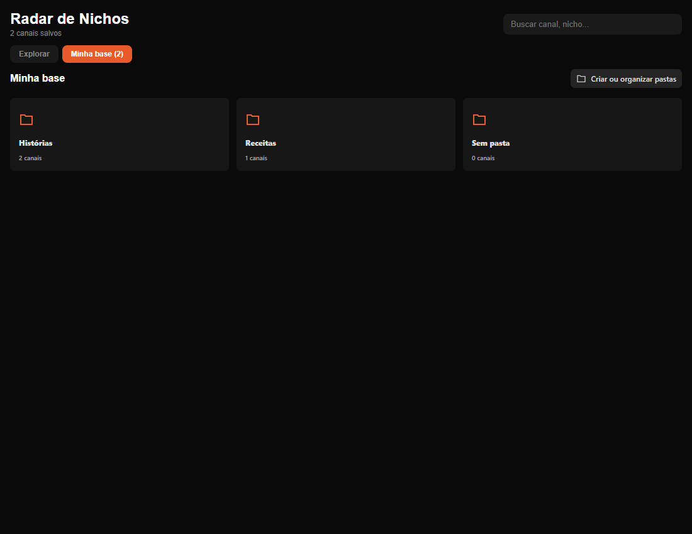
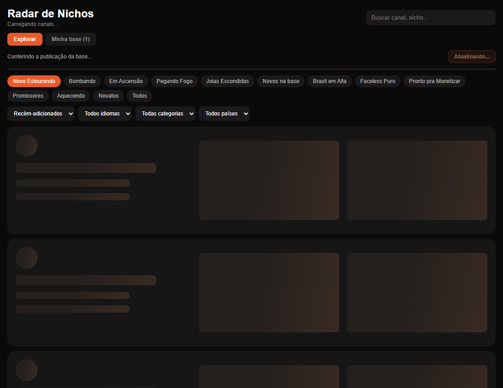

Nardoto
NardotoSalvar canais uma vez, organizar em qualquer tela
O Radar de Nichos ganhou pastas no dashboard, salvamento com confirmação e filtros de canais parecidos, compartilhando a mesma base pessoal do Studio.

Salvar um canal deveria encerrar uma decisão simples: quero guardar esta referência para consultar depois. Quando o mesmo botão também remove o canal, ou quando cada tela parece ter sua própria coleção, essa decisão fica menos previsível. A atualização do Radar de Nichos leva ao dashboard o fluxo de organização que já havia sido preparado no Studio, usando a mesma base pessoal da conta.
O botão passa de Salvar para Salvo depois que o servidor confirma a gravação. Clicar novamente em Salvo abre as pastas. Para remover o canal, existe uma ação separada, chamada Tirar dos salvos. A diferença aparece no comportamento, sem exigir que a pessoa aprenda uma nova tela antes de conseguir guardar uma referência.
A mesma coleção no Studio e no dashboard
A aba Minha base reúne os canais salvos e as pastas da conta. O dashboard consulta o mesmo serviço usado pelo Studio. Assim, a organização não depende do computador em que a pessoa começou a pesquisa, nem exige exportar uma lista para continuar em outra tela.
Essa continuidade usa a estrutura que já existia no servidor. Não foi criada uma segunda coleção para o site. Essa escolha também preserva os canais antigos, inclusive os registros que ainda guardavam apenas uma pasta por canal. Eles continuam aparecendo na organização atual, que permite selecionar várias pastas.

O campo Procurar ou criar pasta serve para as duas tarefas. Enquanto a pessoa digita, a lista mostra os nomes correspondentes. Se o nome ainda não existe, aparece a ação para criar a pasta. Depois, basta marcar os destinos e salvar. Um canal pode servir a pesquisas diferentes e aparecer em mais de uma pasta, sem precisar ser salvo de novo como outra referência.
Remover uma pasta não remove a pesquisa
Separar a existência de um canal da sua organização evita uma consequência indesejada: perder referências ao reorganizar a coleção. Apagar uma pasta retira aquela classificação. Os canais continuam salvos e permanecem nas outras pastas escolhidas. Quando não têm mais nenhuma pasta, aparecem em Sem pasta.
| Ação | Resultado |
|---|---|
| Salvar um canal | Guarda a referência na base pessoal |
| Clicar em Salvo | Abre a organização em pastas |
| Marcar várias pastas | Mantém o mesmo canal em diferentes grupos |
| Apagar uma pasta | Preserva os canais salvos |
| Tirar dos salvos | Remove a referência da base pessoal |
Os cartões também mostram há quanto tempo o canal está postando. Períodos curtos aparecem em dias e recebem destaque laranja. Meses e anos usam um destaque mais discreto. Quando a base não conhece a data inicial, a interface não inventa uma idade para preencher o espaço.
Salvo precisa significar que foi gravado
A primeira versão do dashboard mudava o estado visual antes de receber a confirmação do servidor. Esse tipo de resposta imediata pode funcionar bem, mas precisa lidar com falhas e com respostas que chegam fora de ordem. Nesta atualização, a confirmação de salvamento passou a depender da resposta da gravação.
Também foi tratado um caso menos visível: uma leitura antiga pode chegar depois de uma gravação recente. Se a tela aceitar essa leitura sem verificar sua ordem, o canal recém-salvo pode parecer ter sumido. O controle de revisão descarta essa atualização atrasada. O ensaio reproduziu a sequência, segurando uma resposta de leitura enquanto o salvamento era concluído.
Cliques repetidos não iniciam gravações simultâneas. Se a gravação falha, o botão continua disponível como Salvar e a mensagem informa o problema. Isso evita apresentar uma confirmação que a pessoa não conseguiria encontrar ao abrir sua base novamente.
Parecidos com filtros e contexto
A consulta de canais parecidos passa a oferecer filtros de idade, visualizações por vídeo, idioma e duração. Canais mais novos têm prioridade por faixa de idade; dentro da faixa, a semelhança ajuda a ordenar os resultados. Canais sem atividade no mês ficam para o fim.
O botão de salvar também aparece nesses resultados. A pessoa pode explorar uma referência, guardá-la e continuar a pesquisa sem voltar à lista inicial. Em telas estreitas, os cartões reorganizam seus vídeos e o painel de pastas permanece dentro da largura disponível.
Carregar e conferir a atualização
O Radar agora abre com cartões de espera e prioriza os canais recém-adicionados. A ordenação Em Alta continua disponível: nela, os mesmos canais fortes podem permanecer no topo mesmo quando a base recebe novidades.
O botão Atualizar confere a publicação no servidor. A tela mostra a data da base e informa se chegou uma versão nova ou se continua igual. Essa data não significa que todos os canais foram coletados naquele instante. Consultas demoradas oferecem nova tentativa, e respostas antigas não substituem uma busca mais recente.

A autorização continua no servidor
Esconder um botão não protege uma base de dados. Por isso, os serviços do Radar verificam o acesso da conta antes de consultar as informações. A regra desta atualização reserva o recurso aos planos pagos e remove a exceção que permitia acesso durante o teste gratuito.
Os testes locais executaram o código do servidor com contas simuladas e conferiram também o comportamento da tela no Chrome. Foram exercitados salvamento, pastas, filtros, falhas de gravação, troca de conta e perda de acesso. Essa validação é distinta de uma sessão real autenticada: os dados das capturas são fictícios, e nenhuma coleção pessoal foi usada como massa de teste.
A decisão central foi manter um significado estável para cada ação. Salvar guarda a referência. Organizar muda suas pastas. Remover exige uma ação própria. Quando a pesquisa atravessa o Studio e o dashboard, esses significados continuam os mesmos.
Escrito por Tharcisio Nardoto, engenheiro civil e criador do Nardoto Studio.